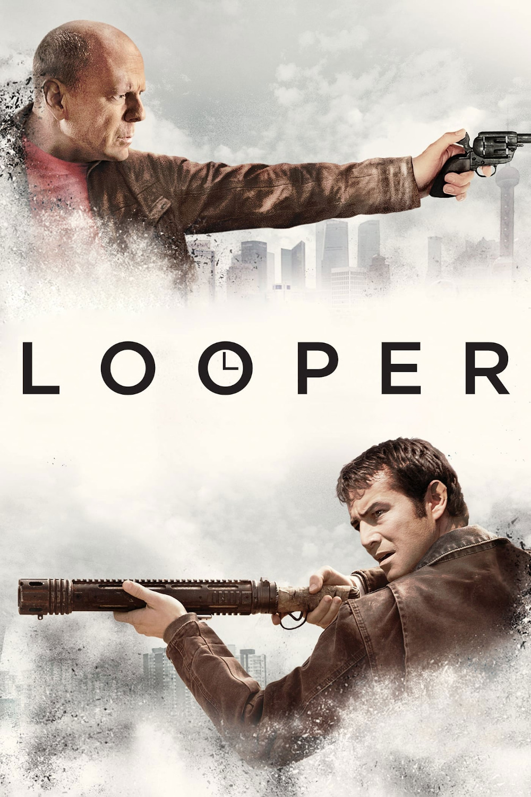

Мировая премьера: 28 сентября 2012
Слоган: В плену будущего. В плену прошлого.
Сюжет: В недалёком будущем, где стали возможны путешествия во времени, некая корпорация убирает нежелательных людей, отправляя их в прошлое. Задача принимающей стороны – убить жертву, стерев тем самым несчастного из истории. Всё идёт гладко до тех пор, пока главный герой не обнаруживает в качестве очередной жертвы... самого себя из будущего.
Режиссёр: Райан Джонсон
В ролях:
| Джозеф Гордон-Левитт | Джо |
| Эмили Блант | Сара |
| Брюс Уиллис | Старый Джо |
| Джефф Дэниелс | Эйб |
| Пирс Ганьон | Сид |
| Пол Дано | Сет |
| Ноа Сеган | Кид |
| Гаррет Диллахант | Джесси |
| Пайпер Перабо | Сюзи |
| Саммер Цин | Жена старого Джо |
Бюджет: $ 30 млн.
Кассовые сборы в США: $ 66 млн.
Кассовые сборы в мире: $ 177 млн.
Продолжительность: 1 ч. 51 мин.
Рейтинг: 7.4